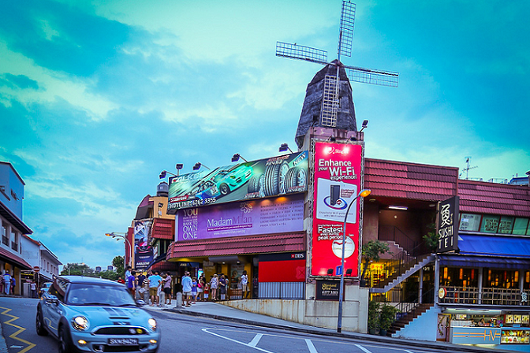

Culture

Holland Village
Established in the early 1900s by Singapore’s Dutch community, Holland Village was the former home of British Army personnel and their families. Plantations, colonial estates and nurseries once dotted this neighbourhood, and its European-influenced legacy can still be seen in the architecture of its quaint shophouses and low-rise buildings.
 Circle Line: CC21 Holland Village
Circle Line: CC21 Holland Village I especially like the night time.
I especially like the night time.